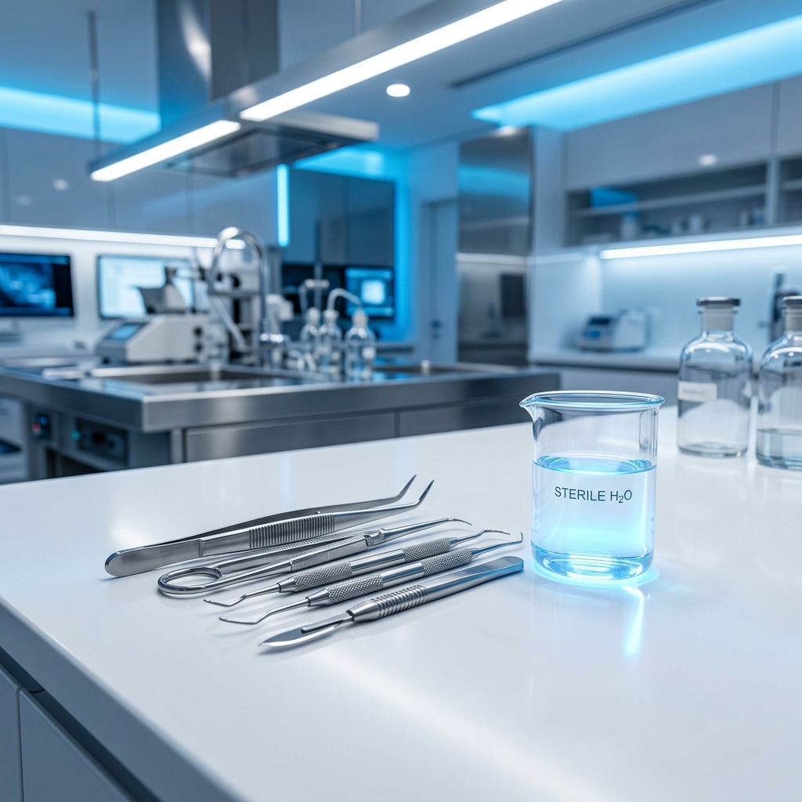
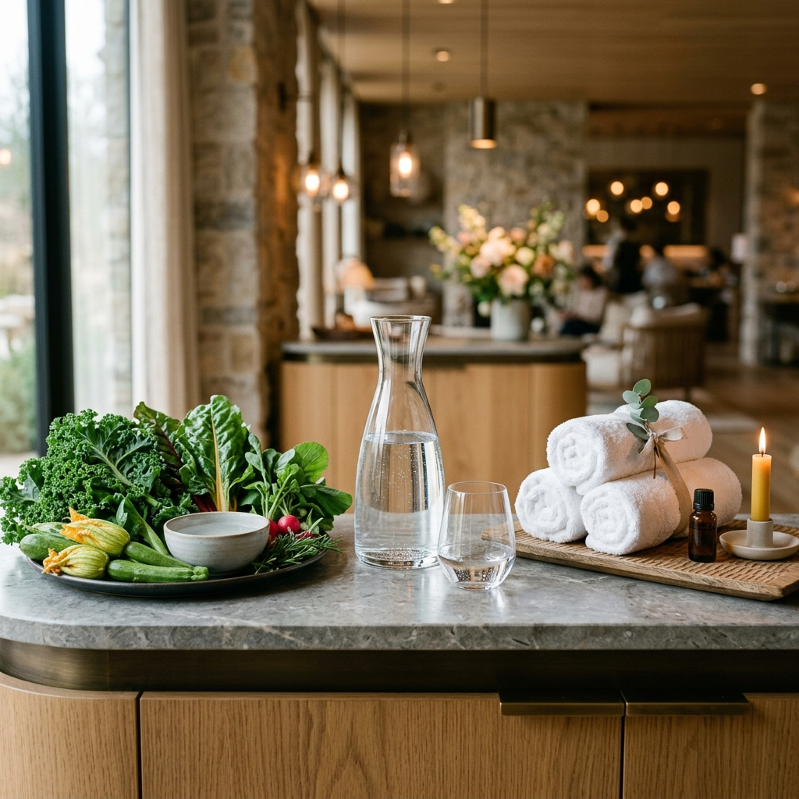

Bioseguridad y Precisión
El Secreto de la
Máxima Asépsia
En el ámbito médico, el control de las infecciones y la no-toxicidad celular son vitales. En España, el uso clínico del Ácido Hipocloroso (pH 2.5) generado por las máquinas Enagic está ganando un prestigio inmenso frente a los químicos abrasivos tradicionales.
🦷 Clínicas Dentales de Vanguardia
Reputadas clínicas en España utilizan el pH 2.5 Kangen para la desinfección inmersiva del instrumental quirúrgico. Su capacidad bactericida en 30 segundos elimina patógenos sin el olor tóxico ni el residuo abrasivo de los autoclaves químicos tradicionales.
🧬 Reproducción Asistida
Uno de los casos más asombrosos proviene de una prestigiosa clínica pionera de reproducción asistida. Utilizan el Agua Fuerte Ácida (pH 2.5) para limpiar y esterilizar las placas y entornos de incubación biológica donde se produce la fecundación del óvulo y el espermatozoide. Los resultados han demostrado que este higienizante 100% libre de químicos tóxicos respeta la viabilidad celular mejor que los detergentes de laboratorio habituales.
Excelencia en el
Servicio Sensorial
El paladar no engaña, y la piel tampoco. El sector del lujo, la restauración ecológica y el bienestar ha adoptado el agua super-alcalina (pH 11.5) y el agua rica en H2 con entusiasmo.
🥗 El Caso de Ecocentro (Madrid)
Ecocentro, uno de los referentes nacionales en alimentación consciente y ecológica en Madrid, conoce el valor de este agua. Tanto es así que comercializan sus propias botellas de litro de Agua Kangen a sus clientes en torno a 1 euro la botella. Una validación absoluta de la enorme demanda de agua micro-estructurada en el sector ecológico de prestigio.
🧖♀️ Spas y Estética de Alta Gama
Los centros de estética han sustituido tónicos micelares de laboratorios carísimos por el Agua de Belleza (pH 6.0), generada in situ. Su efecto ligeramente astringente, libre de aromas sintéticos, devuelve el manto ácido natural a la piel, siendo el secreto de los mejores tratamientos faciales post-peeling.

Pureza Ecológica
Integración en Todas Partes
Gimnasios y Alto Rendimiento
Atletas de élite evitan la fatiga muscular gracias a la capacidad del Hidrógeno Molecular de neutralizar el ácido láctico intracelular durante el ejercicio explosivo.
Restaurantes Biológicos
Chefs usan el pH 11.5 de Kangen para extraer profundamente el sabor de los caldos y el té, y para lavar los pesticidas invisibles de frutas y verduras frescas antes de servirlas.
Agricultura Urbana
Germinados y huertos urbanos de alta rotación utilizan los protocolos de pH Kangen para estimular el enraizamiento rápido y evitar proliferación de hongos sin fungicidas.